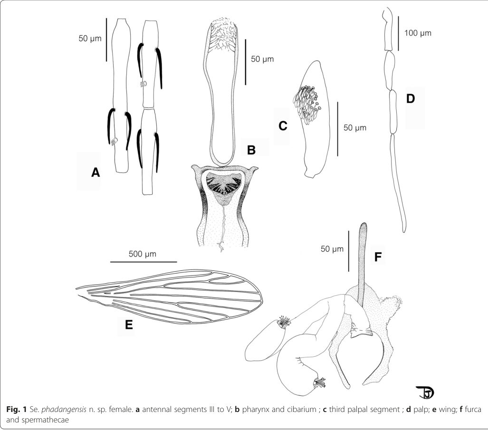
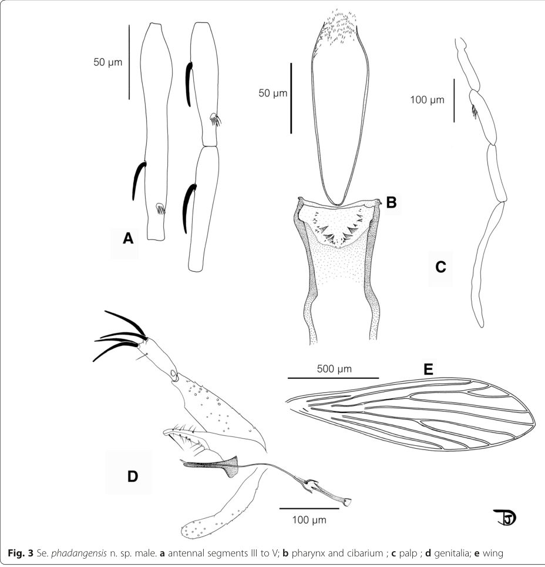
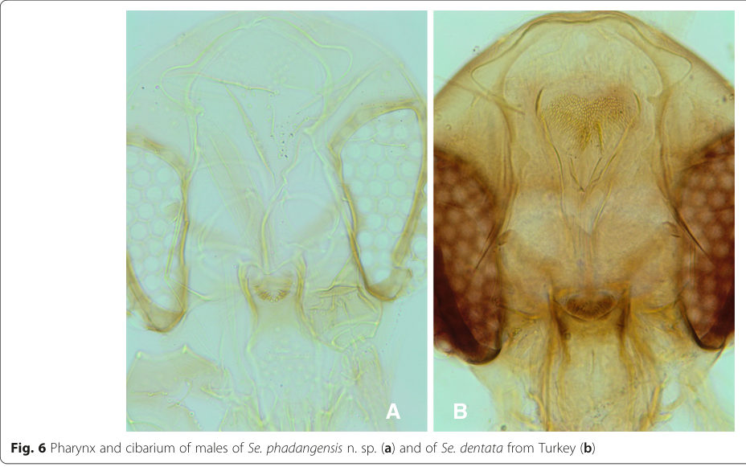

Species › Sergentomyia › Sergentomyia
Sergentomyia phadangensis
| Classification | Genus Sergentomyia, subgenus Sergentomyia |
|---|---|
| Status | valid |
| Distribution | Records in the project regions: Thailand (Galati et al. 2025) | Thailand (Phadang cave, Phitsanulok Province) (Polseela et al. 2016) |
| Thailand | Described from Thailand (Polseela et al., cited in Renaux Torres et al. 2023) | Thailand (Galati et al. 2025) | Type locality: Phadang cave, Noen Maprang, Phitsanulok Province, lower northern Thailand, 16°30'58.8"N, 100°40'00.5"E, 108 m a.s.l.; the most abundant species caught there (CDC light traps, Feb 2010-Jan 2011); holotype female in the National Science Museum, Pathumthani (Polseela et al. 2016). | Lopburi (Polseela et al. 2024); listed in the 42-species Thai checklist (Soe et al. 2026, Table 3) (as S. phadengensis) |
| Diagnostic notes | Not in any printed key in this collection; see original description. | Galati et al. 2025 (p. 33) list it as Sergentomyia (Sergentomyia) phadangensis Polseela, Depaquit and Apiwathnasorn, 2016. | Original description (Polseela et al. 2016): placed in subgenus Sergentomyia by its wide, smooth spermathecae (no limit between body and individual duct; common basal duct present). Separated from all other SE Asian species by its highly developed cibarial armature in both sexes. ♀ cibarium with a curved row of 6-8 strong, pointed, dark brown teeth on each side and a few much smaller median ones; pigment patch wide, triangular with rounded angles; pharynx narrow with a discrete armature of small backward-pointing teeth (S. schwetzi-like). ♂ cibarium with 3-5 large pointed teeth on each side and 12-20 denticles; no pigmented area. Closest species S. dentata: cibarial teeth smaller and paler, pharynx wide with a prominent S. antennata-like armature. ♀ (n = 16): AIII 140.71-165.29 µm, shorter than AIV+AV and than the labrum (AIII/labrum-epipharynx 0.77-0.89; labrum-epipharynx 172.59-201.07 µm); ascoids without spur, not reaching the next articulation; palpal formula 1, 2, (3, 4), 5, about 40 club-like Newstead's scales on P3; no mesanepisternal setae; wing 1383.73-1608.35 µm. ♂ (n = 10): AIII 143.60-145.29 µm, AIII/LE 0.80-0.94; style with four terminal spines, accessory spine between distal quarter and third; single curved paramere with rounded top; aedeagus straight, finger-like; coxite 193.76-214.00 µm with a few internal setae not in a tuft; surstyle 143.59-194.24 µm, shorter than coxite; genital filaments 201.35-239.99 µm, genital pump 70.72-92.46 µm (ratio 2.47-3.00, column printed as 'GP/GF'). Cyt b sequences GenBank KT266691-KT266700. |
| Sources | Renaux Torres et al. 2023, Galati et al. 2025, Polseela et al. 2016, Polseela et al. 2024, Soe et al. 2026 |
⚠ Conflicting characters
| Character | Source A | Source B | Type | Comment |
|---|---|---|---|---|
| Subgenus | Renaux Torres et al. 2023: ungrouped (taxa.csv) | Galati et al. 2025: S. (Sergentomyia) phadangensis Polseela, Depaquit and Apiwathnasorn, 2016 (p. 33) | different interpretation | |
| Spelling | Soe et al. 2026: Table 3: 'Sergentomyia phadengensis' | Soe et al. 2026: Abstract and text: Sergentomyia phadangensis | printing error | Staged data use phadangensis. |
How it keys out
This taxon is not reached by any key in this collection (described or recognised later). Use the diagnostic notes and the original description.
The chain of characters leading to this taxon in each key (a ready-made diagnosis).
Figures






